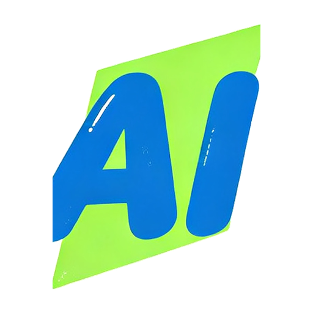

HaiAI123 is a curated AI tools directory that helps people find the right AI tool for work and creativity.
Tools are organized into clear categories: AI chatbots, image tools, video tools, coding tools, writing, productivity, design, audio, agents, AI platforms, learning resources, models, AI detection, prompts, customer care and data analysis. It covers both global and Chinese tools, from ChatGPT, Claude and Gemini to Doubao, Qwen and DeepSeek, each with a short description.
The site also publishes AI guides and a daily feed of AI industry news, and welcomes new tool submissions.